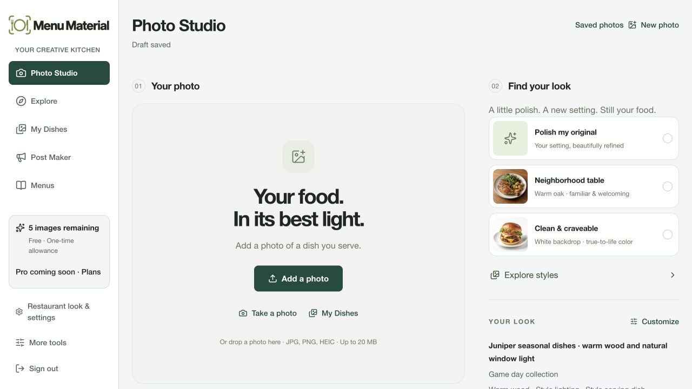
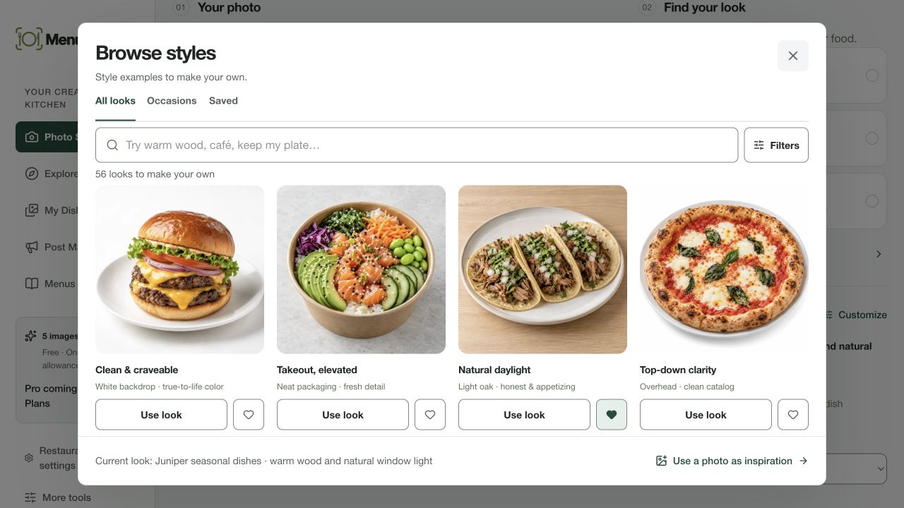
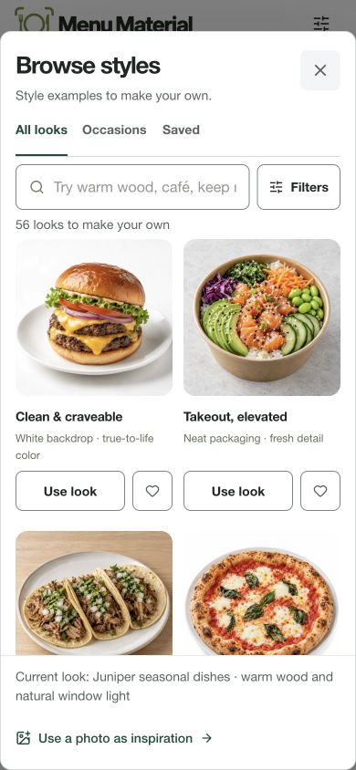
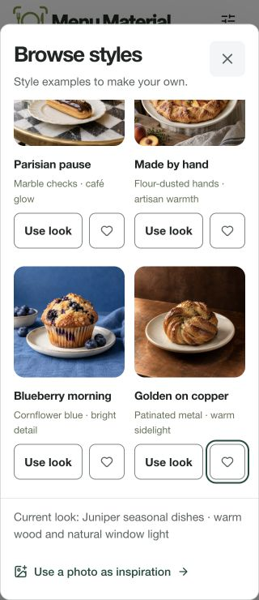
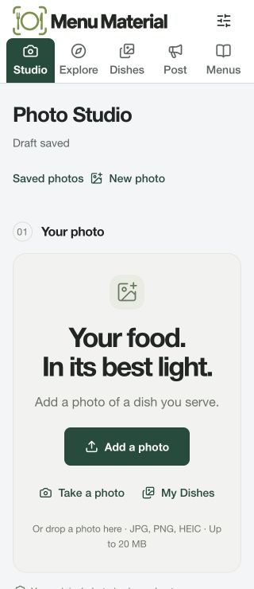
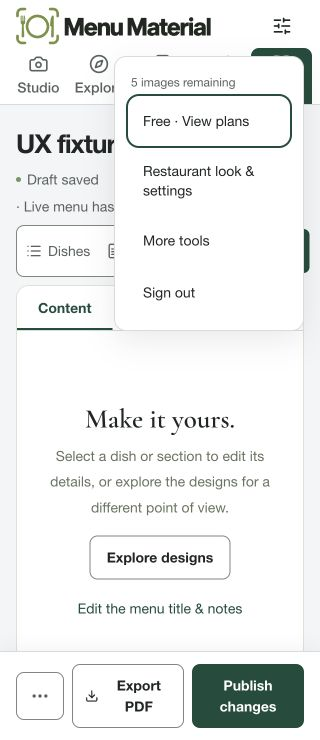
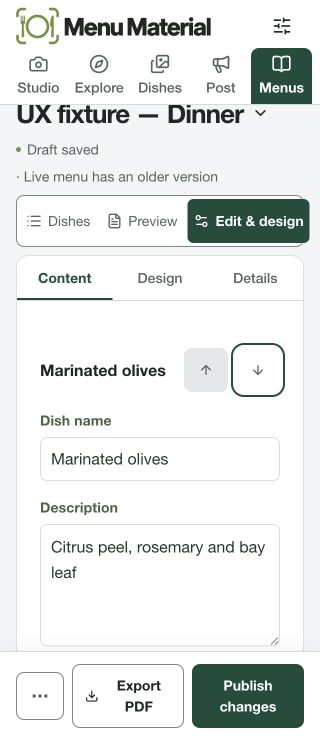
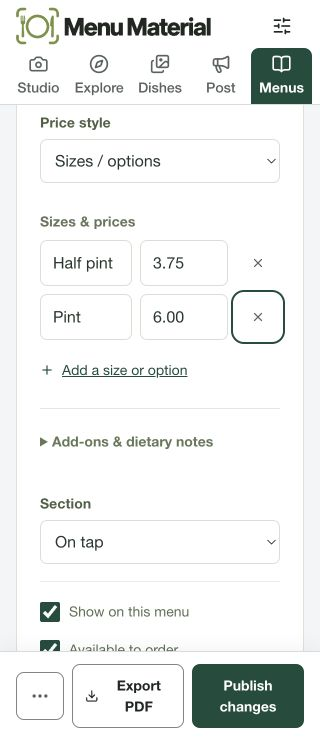
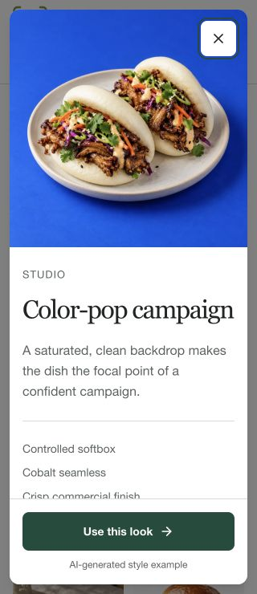
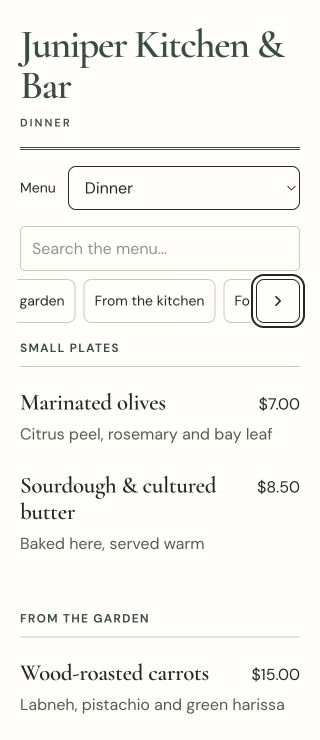

Actual local browser captures for wip-c4ff9335046f. Navigation criteria 11.3 and 11.4 passed. Full target-family, enlarged-text, device and independent human gates remain open. Detailed evidence and limitations.









